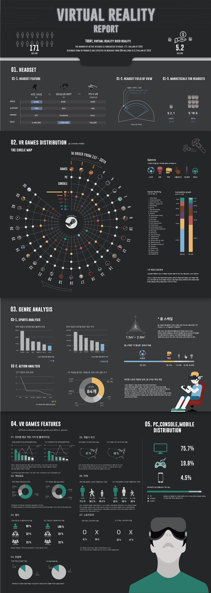
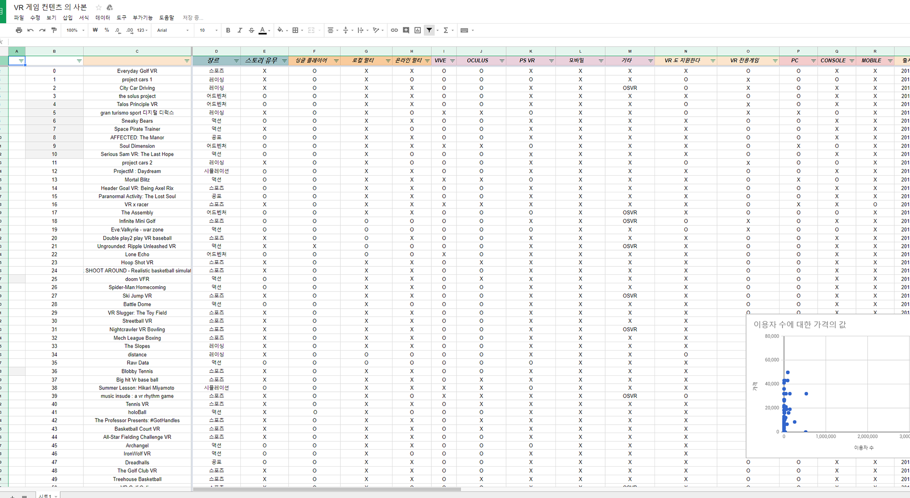
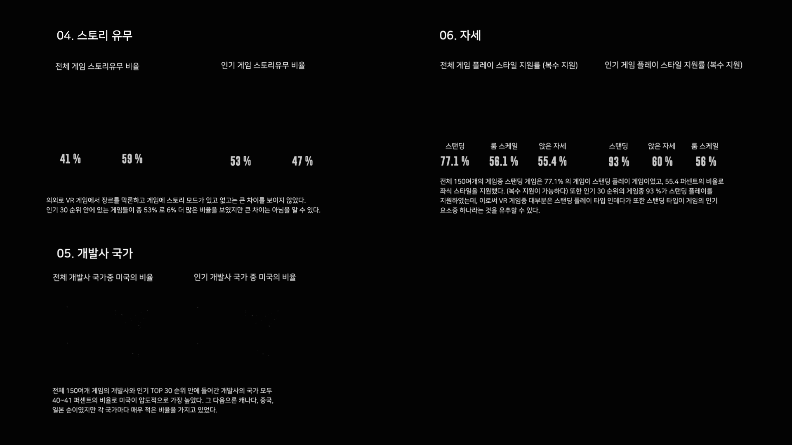
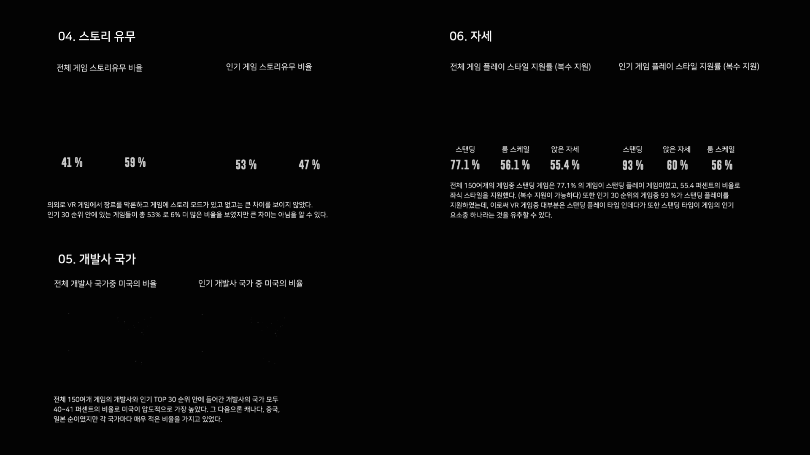

2017 Virtual Reality Report.
Date : 2017
Category : Information design
Contribution : 30%
Category : Information design
Contribution : 30%

2017년이 시작되면서, VR에 관한 수요가 폭발적으로 늘어나고, 관련 VR 게임 컨텐츠가 이에 맞추어 많이 시중에 출시되었고, 또 계속 개발되는 중입니다.
2017년 11월 기준으로, 현재 시중에 출시된 VR 게임들의 정보들을
인포그래픽으로 나타내어 봤습니다.

먼저, 스팀과 오큘러스 스토어, 플레이 스토어를 기준으로 VR 관련 키워드가 포함된 게임들을
구글 스프레드 시트에 정리를 했습니다.
총 300개 이상의 게임을 찾아서 데이터화 하였으나, 이 중 에서 실제로 시각화에 이용된
데이터는 약 150개 가량의 게임이었습니다.
다량의 데이터를 표현하기 위해 보고서 방식의 인포그래픽으로 만들면 좋겠다고 생각했습니다.
 현재 시중의 HMD 의 스펙, 가격, 판매량 등을 나타낸 파트입니다.
현재 시중의 HMD 의 스펙, 가격, 판매량 등을 나타낸 파트입니다. 게임을 각 장르 (액션, 공포, 시뮬레이션, 어드벤처, 스포츠, 레이싱) 으로 나누어서 현재 TOP 30 순위에 들어간 게임을 배치하였습니다.
게임을 각 장르 (액션, 공포, 시뮬레이션, 어드벤처, 스포츠, 레이싱) 으로 나누어서 현재 TOP 30 순위에 들어간 게임을 배치하였습니다.
 VR 게임의 세부 성격을 나타낸 파트입니다.
VR 게임의 세부 성격을 나타낸 파트입니다.